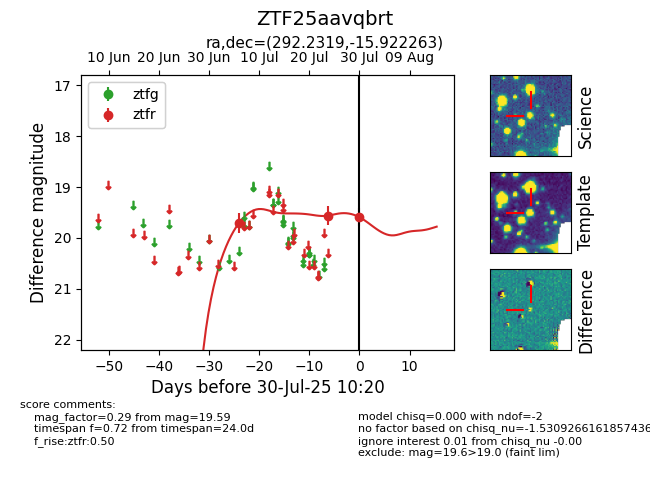

Target ZTF25aavqbrt at 2025-07-30 10:20, see:
FINK: fink-portal.org/ZTF25aavqbrt
Lasair: lasair-ztf.lsst.ac.uk/objects/ZTF25aavqbrt
ALeRCE: alerce.online/object/ZTF25aavqbrt
alt names
ZTF25aavqbrt (ztf,fink)
coordinates:
equatorial (ra, dec) = (292.2319,-15.92226)
galactic (l, b) = (22.6133,-15.33522)
photometry
last ztfr=19.59
3 ztfr detections
